← Adapter de Pixeria Ficha de las imágenes / Manifest Recrear en el formato contrario 8 parejas reales de Stock: 4 landscape → portrait y 4 portrait → landscape . Compara el original con la escena recreada y descarga las imágenes completas.
8 real Stock pairs: 4 landscape to portrait and 4 portrait to landscape. Compare sources and recreated scenes; download full images.
Las 8 parejas Landscape → portrait Portrait → landscape 8 parejas
landscape → portrait Café con hielo · Barcelona 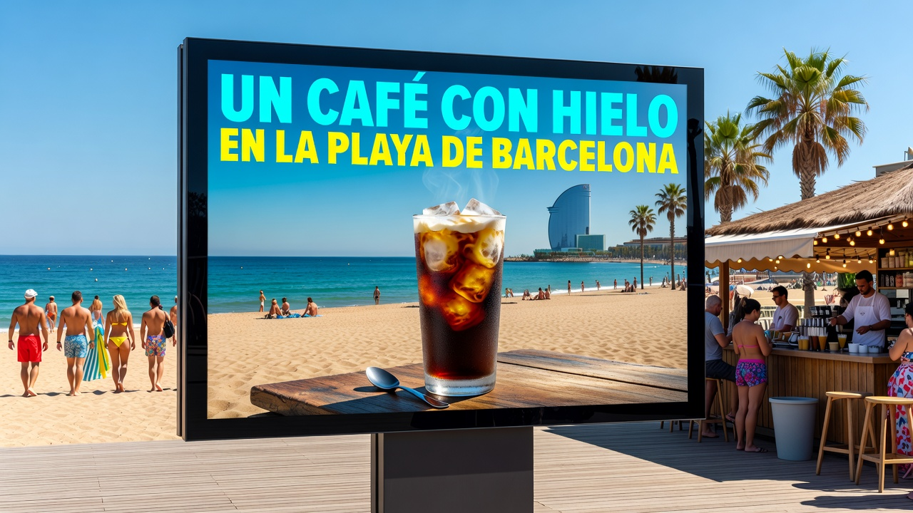
Original · 1280 × 720 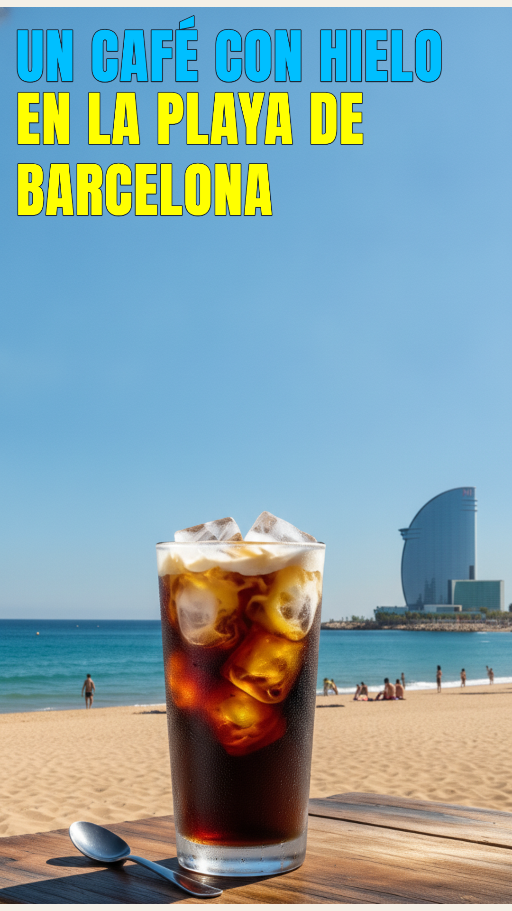
Recreación · 1080 × 1920 Titular cyan y amarillo, letras condensadas y vaso completo.
landscape → portrait Latte · cafetería 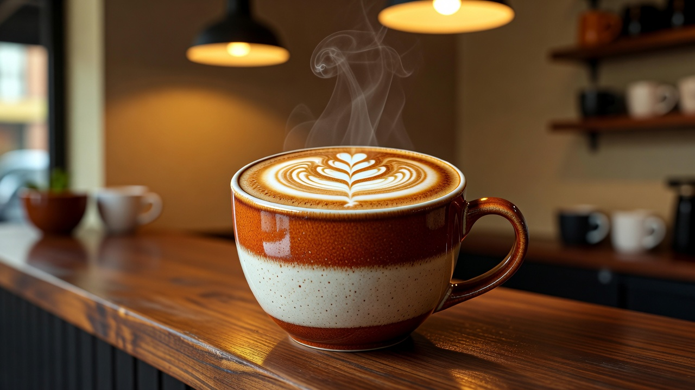
Original · 1280 × 720 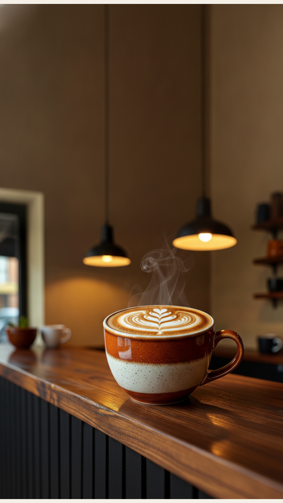
Recreación · 1080 × 1920 Sin texto en el original: conserva la taza, el asa y el latte art.
landscape → portrait Muffin y café · playa 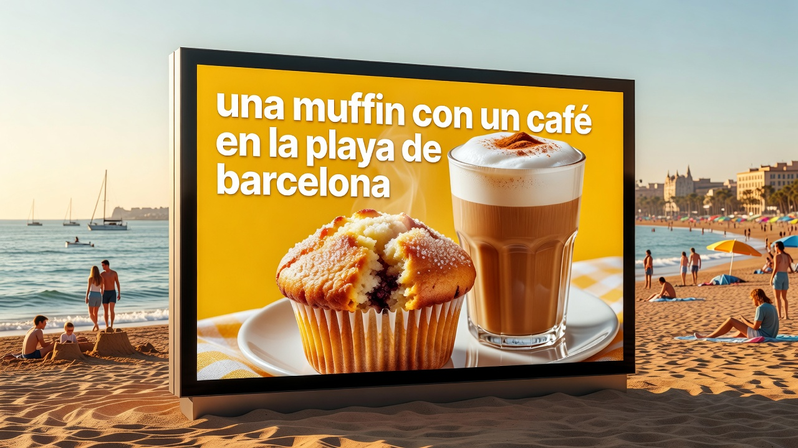
Original · 1280 × 720 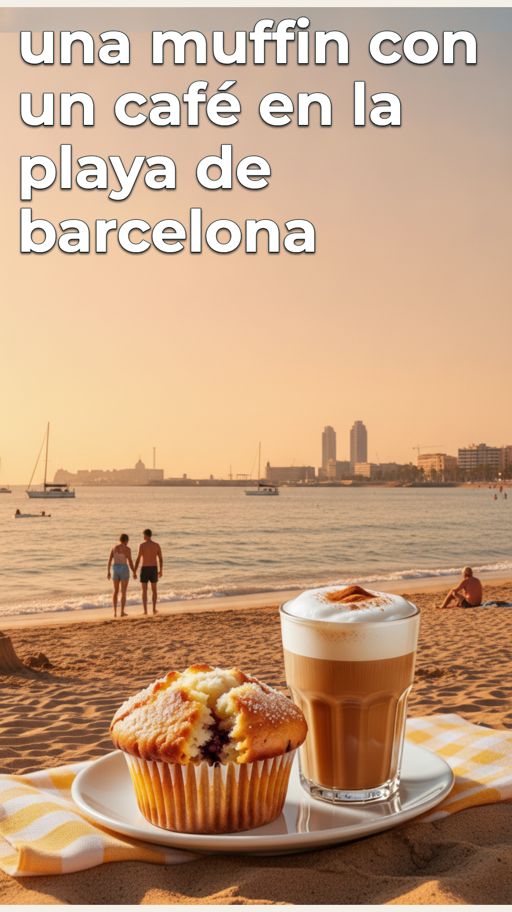
Recreación · 1080 × 1920 Titular blanco completo y productos juntos; el paisaje se recrea.
landscape → portrait Starbucks · Barcelona 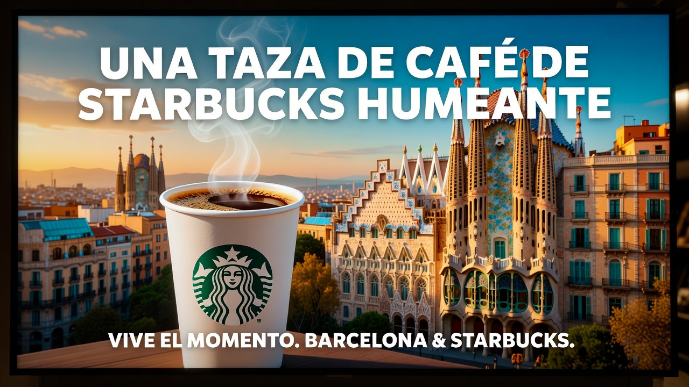
Original · 1280 × 720 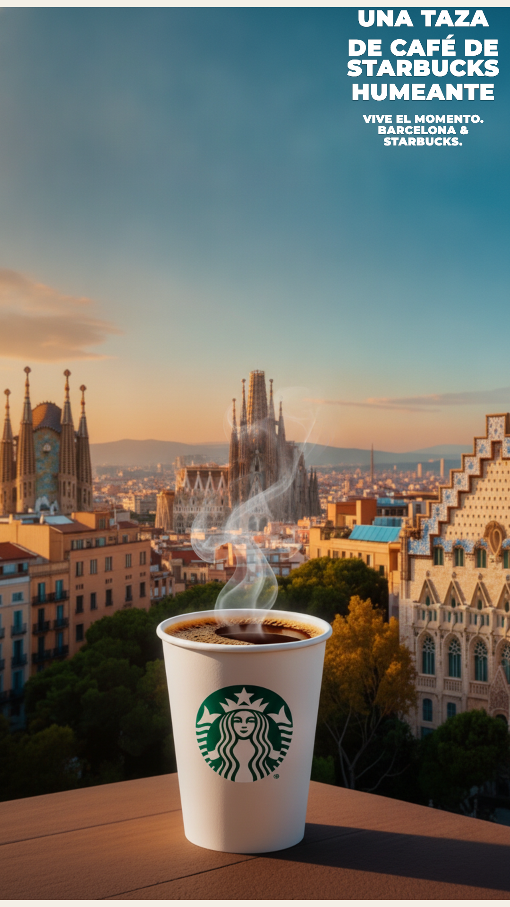
Recreación · 1080 × 1920 Titular y cierre completos; la marca y sus detalles requieren revisión.
portrait → landscape Perfume rosa 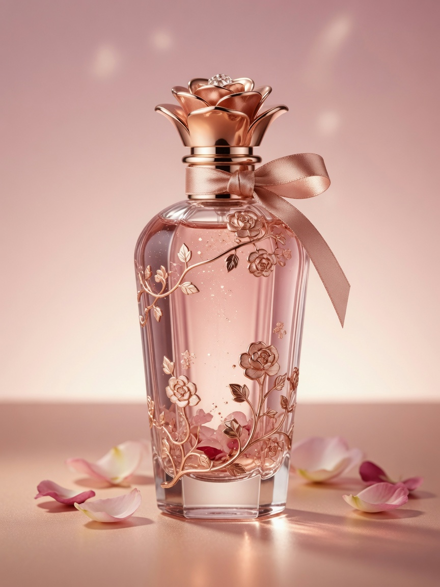
Original · 864 × 1152 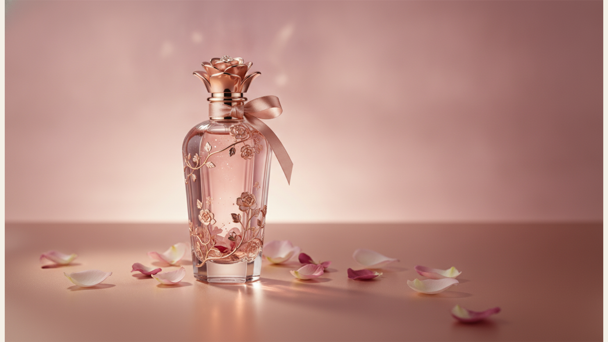
Recreación · 1920 × 1080 Sin texto publicitario: se amplía el entorno floral.
portrait → landscape Perfume azul 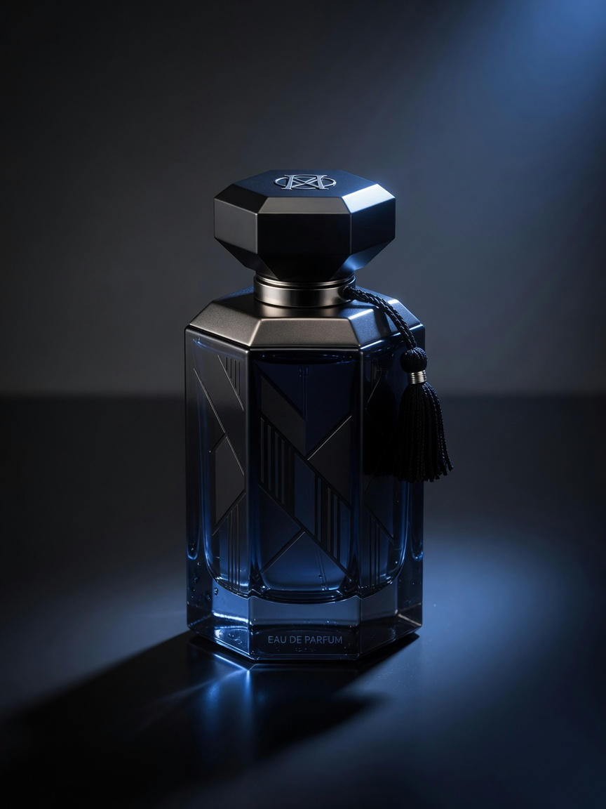
Original · 864 × 1152 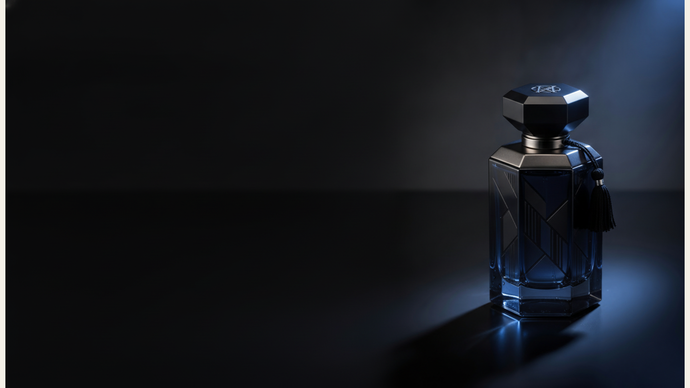
Recreación · 1920 × 1080 Frasco conservado; la etiqueta diminuta necesita validación de marca.
portrait → landscape Cosmética · espejo 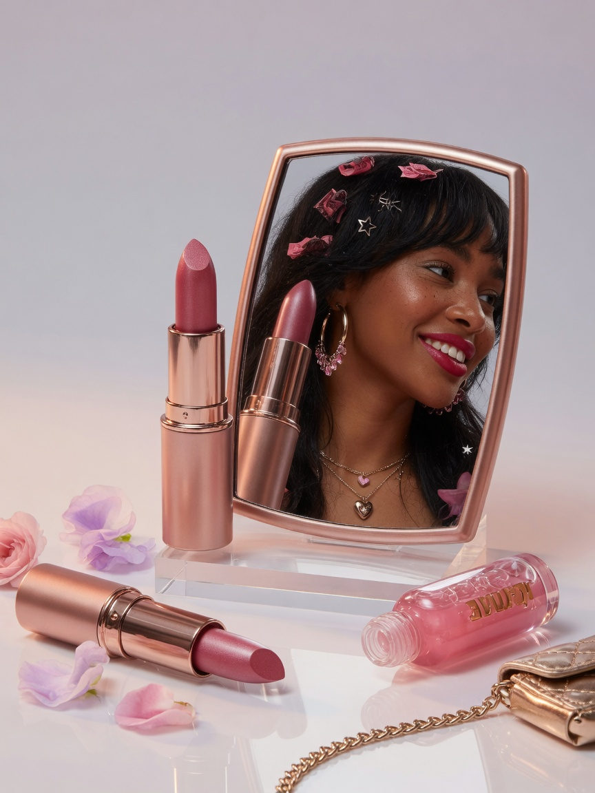
Original · 864 × 1152 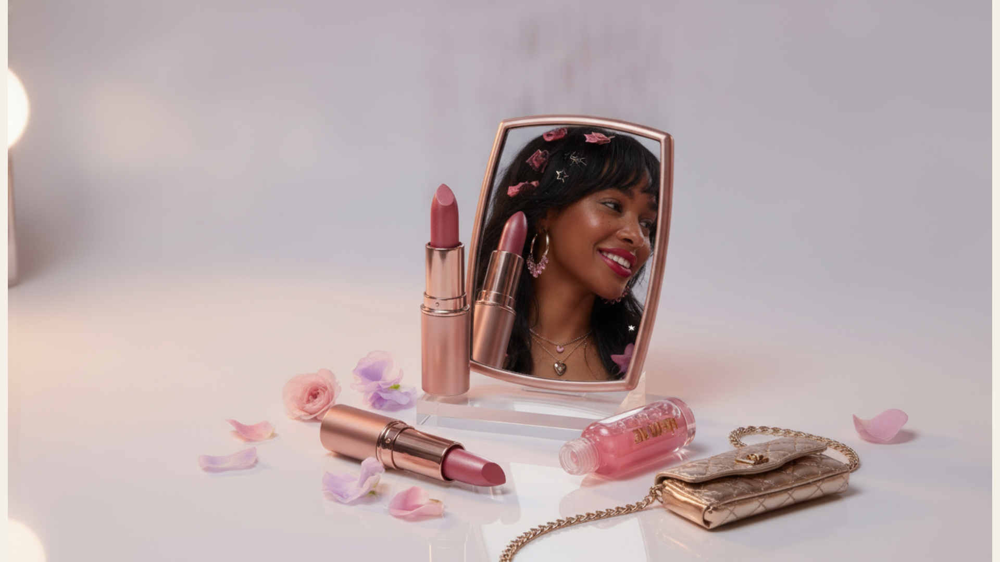
Recreación · 1920 × 1080 Cantidad de productos y reflejo revisados; validar los detalles del envase.
portrait → landscape Zoomies · caramelos 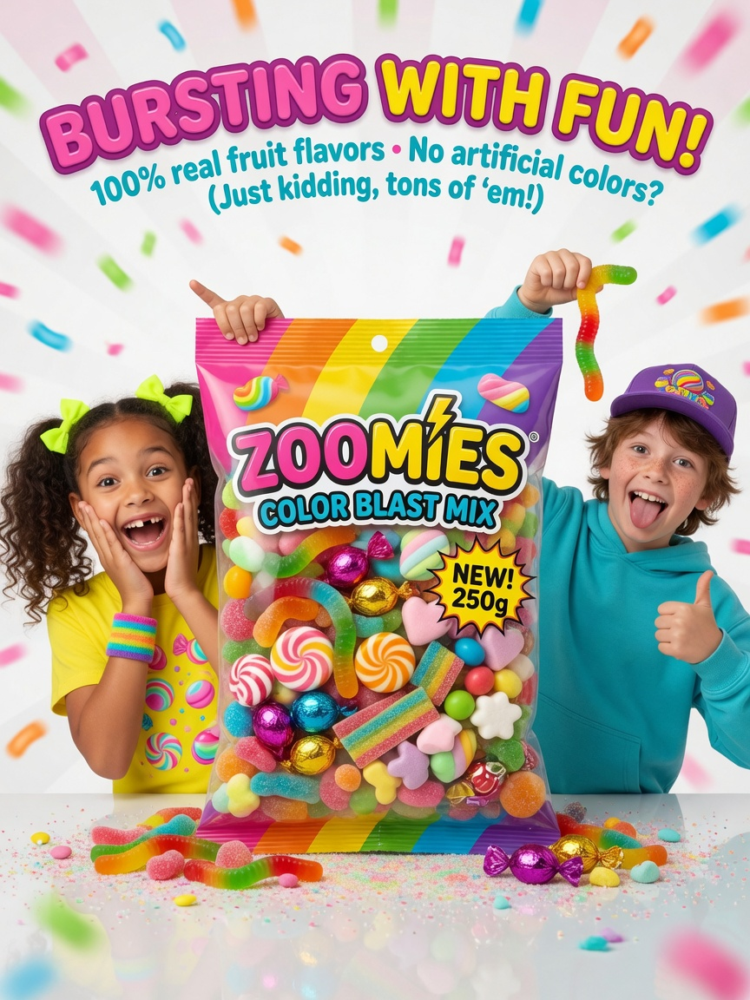
Original · 864 × 1152 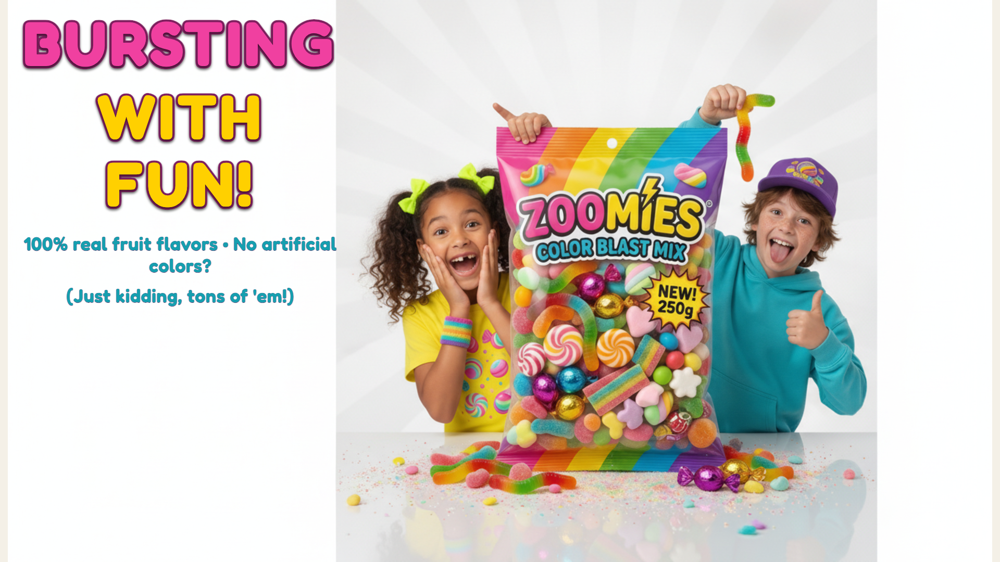
Recreación · 1920 × 1080 Se recompone el titular y la aclaración, conservando ambos niños y la bolsa.
Ensayo con revisión visual inicial. La recreación puede variar detalles del producto, rostros y marca; estas muestras no equivalen a una aprobación de campaña. Algunas piezas conservan márgenes estrechos por la proporción aproximada del generador. Es una batería de ejemplos para mejorar el Adapter, sin entrenamiento de pesos del modelo.
Initial visual review. Recreation can vary product, face and brand details; these examples are not campaign approval. This evaluation improves Adapter behaviour without training model weights.
Se mantiene como regresión pendiente la comparativa MS-DOS/OSX: el análisis no fue válido y se sustituyó por la referencia de latte. / The MS-DOS/OSX source remains a blocked analysis regression; the latte reference replaces it.
OraculoMacMini · 8 octubre 2026
Original Recreación